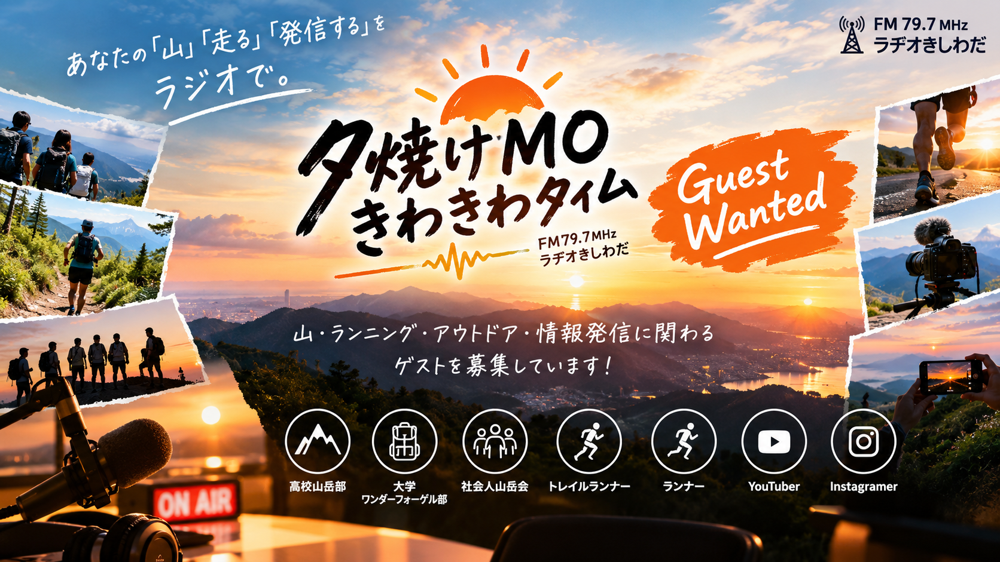

ラジオ番組のゲスト募集

あなたの「山」と「走る」と「発信する」をラジオで。
大阪・岸和田、標高10m。
だけど心はいつも山頂へ。
毎週土曜日16:00〜17:00、 ラヂオきしわだ（FM79.7MHz）からお届けしている 「夕焼けMO きわきわタイム」では、 番組に出演していただけるゲストを募集しています。
登山、トレイルラン、ハイキング、マラソン。
山岳部、ワンダーフォーゲル部、山岳会。
そして、YouTubeやInstagramなどで
山やアウトドアの魅力を発信している皆さん。
あなたが歩いてきた道、 走ってきた道、 そして発信してきた物語を、 ラジオで聞かせてください。
ラジオ出演が初めてでも大丈夫です。
こんなゲストを募集しています
高校山岳部
高校の山岳部・登山部の皆さん。 普段の活動、登った山、合宿、大会、 山での思い出などを紹介してください。
大学ワンダーフォーゲル部
大学のワンダーフォーゲル部、 登山部、アウトドアサークルなど。 仲間と歩いた山や旅の魅力を聞かせてください。
社会人山岳会
地域の山岳会、社会人サークル、 登山グループなど。 活動内容やおすすめの山、 山仲間とのエピソードを紹介してください。
トレイルランナー
トレイルランニングを楽しんでいる方。 レース、練習、好きなコース、 これから挑戦したい大会など、 走る楽しさを聞かせてください。
ランナー
マラソン、ロードランニング、 ウルトラマラソンなど、 「走ること」が好きな方。 初心者も大歓迎です。
YouTuber・動画クリエイター
登山、トレイルラン、アウトドア、 旅などをテーマに動画を発信している方。 チャンネルや活動を紹介してください。
Instagramer・SNSクリエイター
山、登山、ランニング、アウトドア、 旅などをSNSで発信している方。 写真や動画の裏側も聞かせてください。
ラジオで、あなたの活動を紹介しませんか？
活動を知ってもらう
部活動、山岳会、ランニング、 トレイルランニングなど、 普段の活動をラジオで紹介できます。
あなたの「きっかけ」を話す
なぜ山に登るのか。 なぜ走るのか。 なぜ発信するのか。 そのきっかけには、 きっと面白い物語があります。
山やランニングの魅力を伝える
おすすめの山、好きなコース、 思い出に残る大会、 これから挑戦したいことなど、 あなたならではの魅力を聞かせてください。
次の一歩につなげる
あなたの話を聞いた誰かが、 「ちょっと山に行ってみよう」 「走ってみよう」 「自分も何か始めてみよう」 と思うかもしれません。
ラジオ出演が初めてでも大丈夫。
「ラジオなんて出たことがない」
「何を話せばいいかわからない」
「ちゃんとしゃべれるか不安……」
そんな方も大歓迎です。
台本を完璧に覚える必要はありません。 パーソナリティの「きわむし。」が、 ゆる〜く、楽しくお話を引き出します。
用意された答えではなく、 あなた自身の言葉 で語るリアルな話を聞かせてください。
有名じゃなくても大丈夫。
フォロワー数も、 大会実績も、 登山歴も問いません。
高校生が初めて登った山。
大学生が仲間と歩いた縦走路。
社会人が仕事の合間に続けている登山。
一人のランナーが挑戦した初マラソン。
トレイルランナーが走り抜けた一本のレース。
YouTuberが何日もかけて撮影した山。
Instagramに投稿した、一枚の写真。
そこには、それぞれの物語があります。
あなたにとっては普通の経験でも、 誰かにとっては、 次の一歩を踏み出すきっかけになるかもしれません。
全国から応募できます
番組は大阪・岸和田からお届けしていますが、 出演者は関西に限定していません。
高校山岳部、 大学ワンダーフォーゲル部、 社会人山岳会、 トレイルランナー、 ランナー、 YouTuber、 Instagramerなど、
全国からのご応募をお待ちしています。
オンラインでの出演についても、 ご相談ください。
「人生は縦走だ！」
山を歩くように、 人生も一歩ずつ。
この番組では、 山やランニングの話だけでなく、 そこから見えてくる 「その人の人生」も大切にしています。
なぜ、その道を選んだのか。
途中で何があったのか。
そして、これからどこへ向かうのか。
山の縦走路のように、 人生にも登りがあり、下りがあり、 時には道に迷うこともあります。
あなたが歩いてきた 「人生の縦走路」 を聞かせてください。
あなたの「一歩」を、ラジオで。
山に登るとき、 最初の一歩は小さな一歩です。
でも、その一歩がなければ、 山頂にはたどり着きません。
ランニングも、 新しい活動も、 情報発信も同じ。
最初の一歩から、 すべてが始まります。
あなたが歩いてきた道、
走ってきた道、
発信してきた道。
そこには、
あなたにしか語れない物語があります。
その物語を、 ラジオで聞かせてください。
「人生は、一座ごとの連なりだ。」
あなたの次の一座を、 「夕焼けMO きわきわタイム」と 一緒に歩いてみませんか？